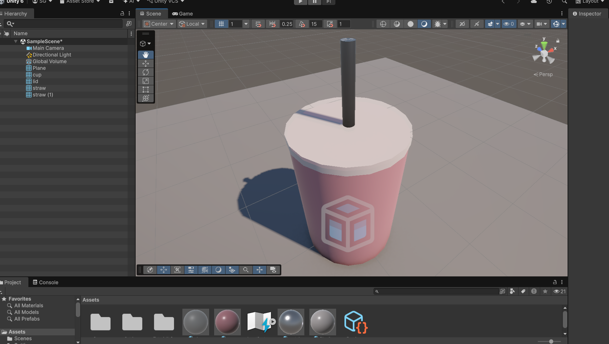

CS 480 • Homework 1
HW 1: Unity First Scene
My Unity Scene

Description of the Space
For this assignment, I created a simple 3D cup with a straw and lid- inspired by the Chick-Fil-A cup that was in front of me at the time. The cup sits on top of a plane as instructed in the project description.
What was built
The object was made out of 4 cylinders. One for the cup base, one flat and slightly wider cylinder for the lid, a long and skinny one for the outside of the straw, and a slightly skinnier one for the inside of the straw. Two cylinders were used for the straw to give the illusion of it being hollow as I have not figured out how to hollow objects yet.
Different colors, roughness, shines, and opacities were then used to give the look of a steal cup base (thats colored), a translucent lid, and a metal straw.
What I Learned
I've never used software like this before, so this was really fun and interesting to play with. I was able to learn the very basics in working with the move, rotate, and scale tools as well as making objects and colors. I'm looking forward to learning a better way to hollow objects and move things around, as that was the most awkward part for me thus far. With that being said, I also learned that I should do these projects when I have access to a mouse.